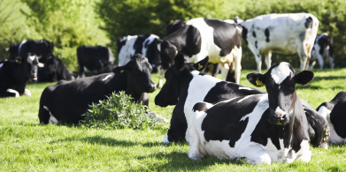

Recently we teamed up with Ivor Cummins, co-author of ‘Eat Rich, Live Long: Mastering the Low-Carb & Keto Spectrum for Weight Loss and Longevity’, on a presentation addressing the Irish Farmers Group. Here, Ivor discuses the importance of soil health, which is fundamental to delivering plant and livestock nutrient value – in turn these nutrient dense food provide us with quality fuel that is essential to health. Follow the link here
Call us: 01603 781 217
Email us: info@tandj.co.uk
Email us: info@tandj.co.uk
News at Thomson & Joseph Ltd
T&J Reaches 70!
May 17 / 2021
By Admin
Thomson & Joseph was established on 11th May 1951 and it’s still going strong today after 70 years! Originally it was set up by Colin Thomson, a physician and Ernest (Joe) Joseph, a pharmacist, to import pharmaceuticals from the re-emerging pharmaceutical industries in Europe post WWII. It was through this activity they became involved in mineral products used in medicine at the time. Since those early days T&J’s interest in minerals has expanded into the agricultural sector, which represents the companies’ main activity today, although we still retain an interest in pharmaceutical minerals, where it all started.
T&J was born into post war austerity and rationing and has survived many economic crises and more recently a health crisis, to reach the grand old age of 70. Thanks to all our customers, suppliers and employees over the years for enabling this anniversary to be achieved. Here’s to the next 70 years!
Christmas Opening Hours
December 16 / 2019
By Admin
It's been a busy year here at T&J and we're all looking forward to the festive period! Please note that the office will be closed for a half day on 23/12/2019 and will be back open for business as usual on 2/01/2020. We look forward to working with you all in the New Year and wish you a very Merry Christmas.
The Benefits of Soil Health For Human Heart Health
October 17 / 2019
By Admin
UK Dairy Day - September 11th 2019
August 13 / 2019
By Admin
We will be exhibiting at UK Dairy Day on Wednesday 11th September at The International Centre in Shropshire. We will be located at Stand H115 and our CEO, Dr David Atherton, will be there giving the latest insights into our Soil Improvement Programme as well as developments in the Agricultural Industry and will be happy to answer any questions you may have - we look forward to seeing you there! For more information please visit their website.
Biology Can Improve the Dairy Industry - An insight into our 3 step Soil Improvement Programme
July 02 / 2019
By Admin

David Atherton, CEO of Thomson and Joseph, outlines how he has helped pioneer a radical Soil Improvement Programme. Click here to view the article.
Our Metal Amino Acid Chelate (MAAC) Range
May 22 / 2019
By Admin
Head on over to our Twitter to see an overview of our range of MAACs and why they are a superior product!
The Benefits of a Well Treated Slurry
April 25 / 2019
By Admin
Visit Albion Lab Services to view this weeks bulletin on the importance of a well treated slurry and the benefits of using Digest-it.
Easter Opening Hours
April 11 / 2019
By Admin
Please be aware that we will be closed from Friday 19th April untill Tuesday 23rd April due to the Easter Bank Holiday. We hope you have a lovely Easter Break!
Next Week is World Worm Week!
March 20 / 2019
By Admin
Dairy Tech 2019
January 24 / 2019
By Admin

Happy New Year - Upcoming Events for 2019!
January 02 / 2019
By Admin
Happy New Year!
We are now open as usual.
Some dates for your diary!
This year we are currently exhibiting at Dairy-Tech on the 6th of February and UK Dairy Day on the 11th of September.
More details will follow when they are available.
To stay up to date follow us on Facebook or Twitter for updates and stand location details once they are available!
We are now open as usual.
Some dates for your diary!
This year we are currently exhibiting at Dairy-Tech on the 6th of February and UK Dairy Day on the 11th of September.
More details will follow when they are available.
To stay up to date follow us on Facebook or Twitter for updates and stand location details once they are available!
< Previous
1
2
3
Next >